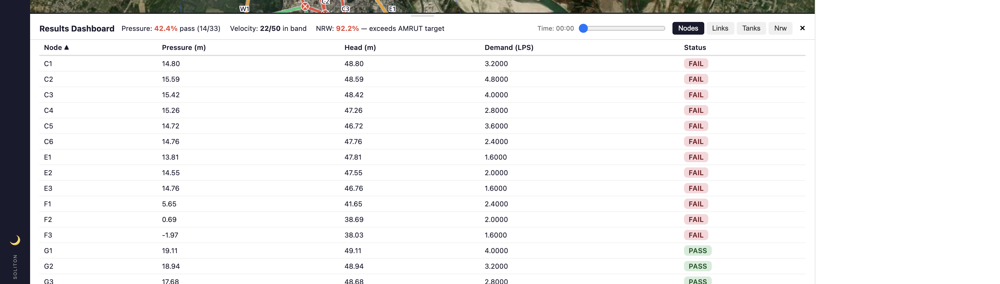
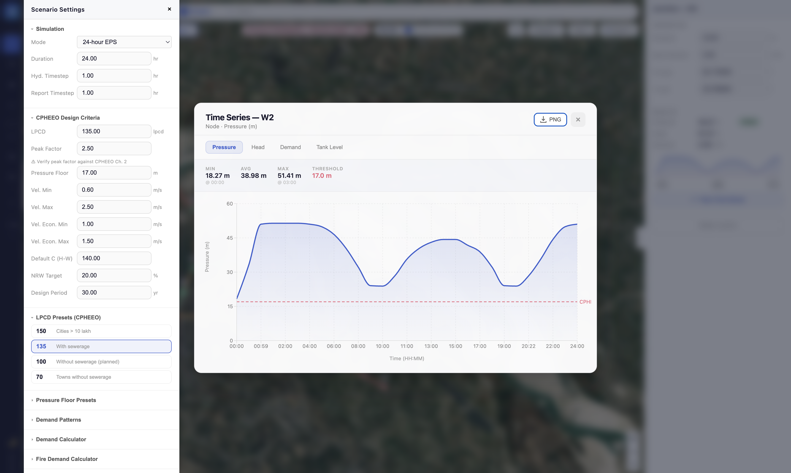
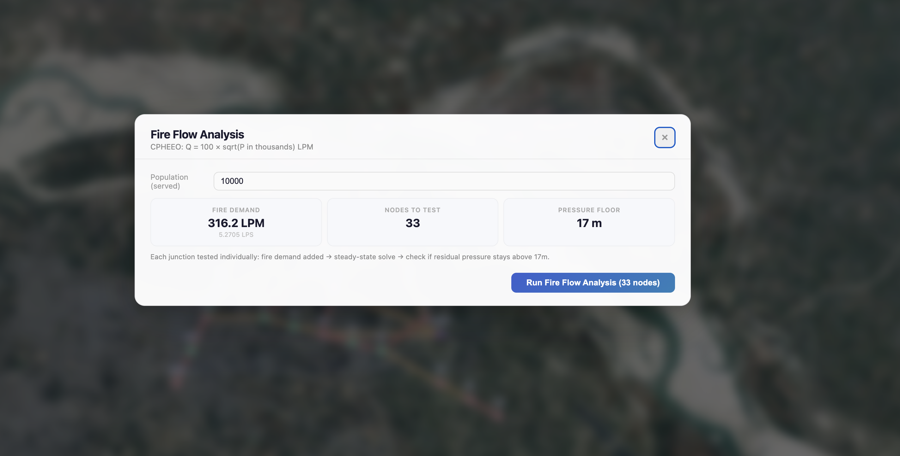
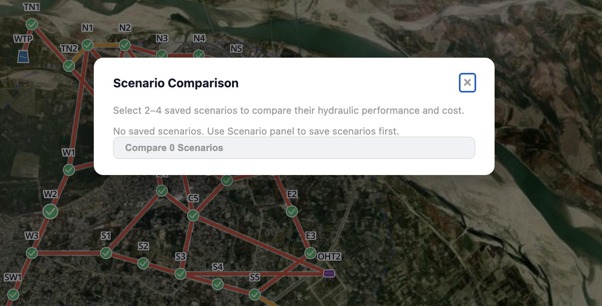
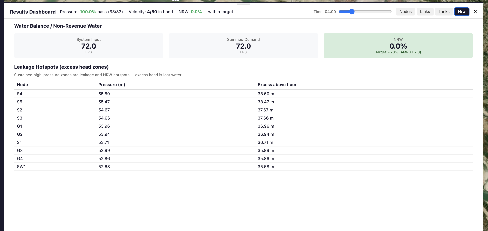
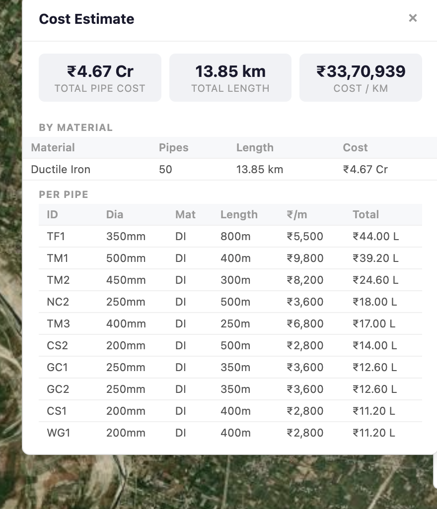
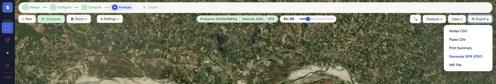
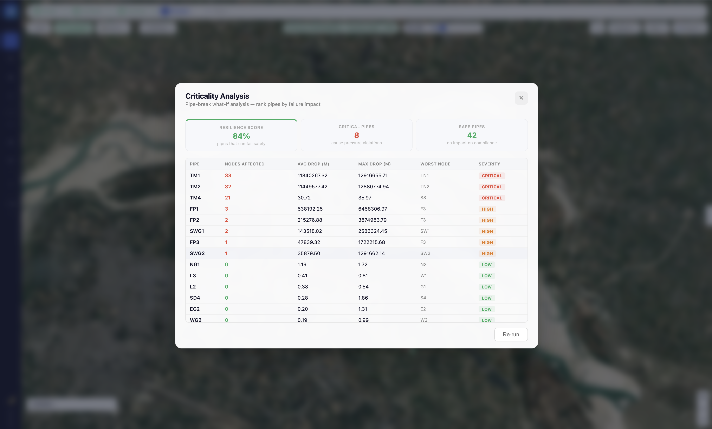
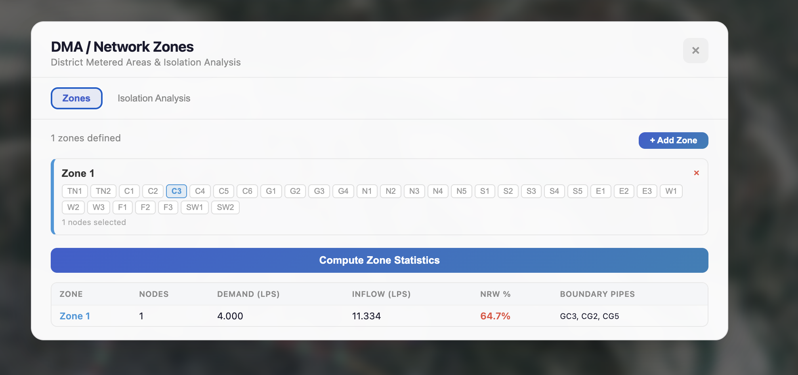

Feature Catalog
4.1 Interactive Map-Based Network Design
Soliton provides a full-screen interactive map canvas powered by MapLibre GL, enabling engineers to design water distribution networks directly on satellite imagery or street maps of the target city. The map supports smooth zooming from city-level overview down to individual pipe junctions, with automatic label display at appropriate zoom levels.

How It Works
- Pan and zoom the map using mouse or trackpad gestures
- Toggle between street map and satellite imagery basemaps
- Network elements (pipes, junctions, tanks) render as interactive map layers
- City boundary outlines, rivers, and major roads display as contextual overlays
- Dark mode available for extended working sessions
Engineers can see the actual geography — roads, buildings, rivers, terrain — while designing the network. This eliminates the disconnect between schematic diagrams and real-world layout, reducing design errors and ensuring pipe routes follow actual road alignments.
DPR Preparation: Design networks on actual city maps for accurate pipe routing and length estimation. Field Verification: Compare designed network against ground conditions using satellite imagery. Stakeholder Presentations: Show network designs on recognisable city maps for approvals.
4.2 Network Element Placement
A dedicated toolbar provides one-click tools for placing all water network elements on the map. Each element type has its own tool button with a keyboard shortcut for rapid design workflows.

| Element | Shortcut | Purpose | Key Properties |
|---|---|---|---|
| Junction | J | Demand node — represents a consumer connection point | Elevation (m), Base Demand (LPS), Population |
| Reservoir | R | Fixed-head water source — represents WTP or river intake | Total Head (m), Head Pattern |
| Tank | T | Elevated storage — OHT, GLR, or ground-level tank | Elevation (m), Diameter (m), Init/Min/Max Levels (m) |
| Pipe | P | Conduit connecting two nodes | Length (m), Diameter (mm), Roughness (C), Material |
| Pump | U | Mechanical device to add energy to the system | Power (kW), Speed Factor, Speed Pattern |
| Valve | V | Flow/pressure control device (PRV, PSV, FCV, etc.) | Type, Setting (m or LPS), Diameter (mm) |
Rapid element placement with keyboard shortcuts means an engineer can lay out a complete network of 50+ junctions in minutes rather than hours. The two-click pipe drawing tool (click source node → click destination node) automatically calculates pipe length using geodesic (haversine) distance from map coordinates.
New network design: Place junctions along road intersections, reservoirs at WTP locations, tanks at elevated sites identified in ground surveys. Network extension: Add new junctions and pipes to expand coverage to unserved wards.
4.3 Pipe Drawing with Vertex Support
Pipes are drawn by connecting two network nodes (junctions, tanks, or reservoirs). Once placed, pipes can be given intermediate vertex points to follow road curves, avoid obstacles, or match actual pipe routing from field surveys. Vertices are fully interactive — drag to reshape, double-click to remove.

Pipe Properties
- Length: Auto-calculated from map coordinates (haversine formula) or manually overridden
- Diameter: Specified in mm — common Indian sizes (100, 150, 200, 250, 300, 350, 400, 500 mm)
- Material: DI (Ductile Iron), HDPE, or PVC — affects roughness coefficient and cost
- Roughness (Hazen-Williams C): Auto-set from material (130 DI, 140 HDPE, 150 PVC)
- Status: Open, Closed, or Check Valve (CV) — for shutdown simulation
- Cost: Automatically estimated from length × material-specific cost per metre
Vertex support ensures pipe routing matches actual field conditions. Auto-calculated lengths eliminate manual measurement errors. Material-linked roughness coefficients enforce CPHEEO standards automatically.
4.4 Pump & Valve Modeling
Soliton supports modelling of pumps and all six EPANET valve types. Pumps can be specified by power (kW) or performance curve, with optional speed patterns for variable-speed drives. Valves include pressure reducing valves (PRV), pressure sustaining valves (PSV), flow control valves (FCV), and more — essential for DMA design.

| Valve Type | Code | Function | Ayodhya Application |
|---|---|---|---|
| Pressure Reducing | PRV | Limits downstream pressure to set value | DMA inlet control — prevent excess pressure in low-lying wards |
| Pressure Sustaining | PSV | Maintains minimum upstream pressure | Protect elevated zones when downstream demand is high |
| Flow Control | FCV | Limits flow to specified rate | Equitable distribution — prevent high-demand zones from starving peripheral wards |
| Throttle Control | TCV | Adjustable flow restriction | Operational control during phased supply hours |
DMA design: Place PRVs at DMA inlets to control zone pressure. Pump sizing: Model booster stations for elevated zones. Equitable supply: Use FCVs to ensure fair distribution across wards.
4.5 EPANET 2.2 Hydraulic Simulation Engine
At the heart of Soliton is the EPANET 2.2 hydraulic solver, compiled to WebAssembly (WASM) for in-browser execution. EPANET is the global gold standard for water distribution network analysis, developed by the US Environmental Protection Agency and used by water utilities worldwide. Soliton brings this engine directly to the browser — no installation, no configuration, no server.

Simulation Process
- Engineer designs or modifies the network using drawing tools
- Clicks "Compute" button in the top toolbar
- Soliton automatically generates a standard EPANET INP input file from the model
- EPANET WASM engine solves the hydraulic equations (typically <1 second)
- Results (pressure, flow, velocity, head loss) appear instantly on the map and in the dashboard
What Gets Calculated
- Pressure (metres of water column)
- Hydraulic head (metres)
- Demand served (litres per second)
- Flow rate (litres per second)
- Velocity (metres per second)
- Head loss (metres per km)
Every hydraulic number displayed in Soliton comes directly from the EPANET 2.2 solver. No values are fabricated, interpolated, or estimated. An expert hydraulic engineer can verify every result by examining the generated INP file in any standard EPANET application.
4.6 Real-Time Results Visualization on Map
After simulation, results appear directly on the map as colour-coded overlays. Engineers can instantly identify problem areas — low-pressure zones, high-velocity pipes, undersized mains — without switching between views or reading raw data tables.

Visual Indicators
| Element | Color | Meaning |
|---|---|---|
| Junction (node) | ● Green | Pressure ≥ CPHEEO minimum floor (17m) — PASS |
| Junction (node) | ● Red | Pressure < minimum floor — FAIL (requires intervention) |
| Pipe (link) | — Green | Velocity in economic band (1.0–1.5 m/s) — OPTIMAL |
| Pipe (link) | — Orange | Velocity in permissible range (0.6–2.5 m/s) — OK |
| Pipe (link) | — Red | Velocity outside permissible range — FAIL |
| Pipe (link) | — Grey (dashed) | Pipe is closed / shut down |
Pressure values (in metres) appear as labels at each node when zoomed in, with green text for passing and red text for failing values. Flow rates and pipe IDs appear on pipes at higher zoom levels.
A single glance at the map tells the engineer where the network is performing well and where it needs attention. Red clusters on the periphery of Ayodhya immediately highlight the wards that need pipe upsizing or additional supply points — exactly the information needed for DPR justification.
4.7 Results Dashboard — Comprehensive Analysis
The resizable bottom panel provides detailed tabular analysis of simulation results, organized into four tabs: Nodes, Links, Tanks, and NRW (Non-Revenue Water). Each table is sortable by any column, allowing engineers to quickly find the worst-performing elements.

Dashboard Components
Headline Summary Bar: At the top of the dashboard, a colour-coded summary shows at a glance:
- Pressure compliance: "85% pass (34/40 junctions)" with green/yellow/red indicator
- Velocity compliance: "28/35 pipes in band"
- NRW: "18% (AMRUT target: <20%)"
- Simulation mode badge: "Steady State" or "EPS 24-hour"
Nodes Tab: Every junction listed with elevation, calculated pressure, head, demand, and PASS/FAIL status against CPHEEO pressure floor.
Links Tab: Every pipe listed with length, diameter, flow, velocity, head loss, and velocity status (OPTIMAL/OK/FAIL).
Tanks Tab: For Extended Period Simulation, displays tank water level charts over 24 hours — showing fill and drain cycles, ensuring tanks do not overflow or empty completely.
Design review: Sort by pressure ascending to find the most deficient nodes. Pipe sizing: Sort by velocity to identify undersized or oversized pipes. DPR annexure: Export tables directly as CSV for inclusion in DPR appendices.
4.8 CPHEEO Design Criteria Compliance
Soliton embeds CPHEEO 2023 (4th Edition — "Drink from Tap") design criteria as configurable parameters. Every simulation result is automatically checked against these criteria, and non-compliant elements are flagged immediately. Engineers can adjust criteria for different city classes and design scenarios.

| Parameter | Default Value | CPHEEO Reference | Adjustable? |
|---|---|---|---|
| Per-capita supply (LPCD) | 135 | CPHEEO 2023 Ch. 16.12, Class I city with sewerage | Yes — presets for 70/100/135/150 |
| Residual pressure floor | 17–21 metres | CPHEEO 2023 Ch. 12.14.2 (24×7 DMA target) | Yes — presets for 7m (1-storey), 12m (2-storey), 17m (3-storey/DMA) |
| Pipe velocity (permissible) | 0.6 – 2.5 m/s | CPHEEO 2023 Ch. 12.11 | Yes |
| Pipe velocity (economic) | 1.0 – 1.5 m/s | CPHEEO recommended range | Yes |
| Hazen-Williams C | 130 (DI) / 150 (HDPE/PVC) | CPHEEO 2023 Ch. 6.5.1.4 | Yes — per material |
| Peak factor | 2.5 | CPHEEO 2023 Ch. 16.16 | Yes |
| NRW target | <20% | AMRUT 2.0 | Yes |
| Design period | 30 years | CPHEEO 2023 Ch. 16.8 | Yes |
Built-in compliance checking eliminates the need for manual verification against design standards. Every simulation result is automatically graded PASS or FAIL against the configured criteria. DPR reviewers can verify compliance at a glance, accelerating the approval process.
4.9 Diurnal Demand Pattern Editor
Water demand varies throughout the day — morning peaks for bathing, midday lull, evening cooking peaks. Soliton provides an interactive 24-hour bar chart where engineers can drag individual hourly multipliers to define the diurnal demand pattern. Pre-built patterns include the CPHEEO default, flat (uniform), and commercial profiles.

How It Works
- Each bar represents one hour (0:00 to 23:00)
- Bar height is the demand multiplier — 1.0 = average demand, 2.5 = peak
- Drag any bar to adjust — the pattern auto-validates to ensure consistency
- Average multiplier indicator warns if pattern average deviates from 1.0
- Pattern is applied in Extended Period Simulation (EPS) to model realistic 24-hour demand variation
Realistic demand modelling is critical for 24×7 supply design. The pattern editor lets engineers model Ayodhya-specific demand peaks — including early morning bathing at Saryu ghats and temple visit surges — ensuring the network is designed for actual usage patterns, not just average demand.
24×7 DMA design: Verify tank capacity and pipe sizing handle peak-hour demand. Pilgrimage events: Model demand spikes during Deepotsav, Ram Navami with custom patterns. Industrial zones: Apply commercial demand profiles for non-residential areas.
4.10 Fire Demand Analysis
Municipal water networks must be designed to handle simultaneous domestic demand plus fire-fighting requirements. Soliton calculates fire demand using the Kuichling formula (Q = 100√P LPM) as specified in CPHEEO guidelines, and provides fire flow analysis to identify junctions that cannot sustain fire-fighting operations.

Fire Demand Calculator
- Input: City population (in thousands)
- Output: Fire flow requirement (LPS and M³/hour)
- Hydrant count estimate (at 1000 LPM per hydrant)
- Fire flow analysis tests each junction under simultaneous peak + fire demand
- Identifies junctions that fail to maintain minimum pressure during fire events
Fire safety compliance: Verify network can sustain fire-fighting at high-density zones (temple area, market area). Hydrant placement: Identify optimal locations for fire hydrants based on available flow and pressure. DPR annexure: Document fire demand compliance for municipal fire department sign-off.
4.11 Extended Period Simulation (EPS) — 24-Hour Analysis
While steady-state analysis provides a snapshot, EPS simulates the network over a full 24-hour period with time-varying demands, tank level changes, and operational rules. This is essential for 24×7 supply design, where tank fill/drain cycles, pump schedules, and peak-hour performance must be verified.

EPS Capabilities
- Simulate 24-hour network behaviour with hourly timesteps
- Time slider to scrub through results — see pressure/flow at any hour
- Tank level charts show fill and drain cycles over 24 hours
- Verify tanks do not overflow or run dry during peak demand periods
- Operational rules: automatically open/close pumps based on tank levels
- Water quality simulation for "Drink from Tap" compliance: track water age (IS 10500:2012 freshness), chlorine residual decay (minimum 0.2 mg/L at consumer tap), and source tracing
24×7 water supply requires proving that the network performs throughout the day, not just at average demand. EPS reveals critical vulnerabilities — tanks that empty during morning peak, pipes that exceed velocity limits during high-demand hours, zones that lose pressure overnight. This is the analysis AMRUT reviewers look for.
4.12 Scenario Management — Save, Load & Compare
Engineers need to explore multiple design alternatives — different pipe sizes, tank locations, DMA configurations. Soliton provides scenario management that saves complete network states, loads them for comparison, and shows side-by-side performance metrics.

Scenario Operations
- Save: Capture current network design + settings as a named scenario
- Load: Restore any previously saved scenario for further editing
- Compare: Side-by-side dashboard showing metrics of two selected scenarios
- Export/Import: Share scenarios as JSON files between engineers or offices
- Delete: Remove outdated scenarios to keep workspace clean
Option appraisal: Compare "24×7 in 11 wards" vs "24×7 in 4 DMAs" — which achieves better compliance at lower cost? Design review: Save baseline design, try alternatives, compare results before finalising. Team collaboration: Export a scenario, send to colleague, import for parallel analysis.
4.13 Non-Revenue Water (NRW) Analysis
Non-Revenue Water — water produced but not billed — is a critical metric for AMRUT 2.0. Soliton calculates NRW as the difference between system input (from reservoirs) and consumer demand (at junctions), expressed as a percentage. It also identifies leakage hotspots by flagging zones with excess pressure.

NRW Analysis Components
- Water balance: Total system input (LPS) vs. total demand served (LPS)
- NRW percentage: Automatic calculation with AMRUT compliance check (<20%)
- Leakage hotspots: Nodes where pressure exceeds 1.5× the design floor — excess pressure drives physical losses
- Excess pressure table: Lists each node with pressure above threshold, showing excess metres
Reducing NRW is a primary AMRUT objective. By identifying high-pressure zones, Soliton guides PRV placement for pressure management — the most cost-effective NRW reduction strategy. This directly supports DPR justification for pressure management infrastructure investment.
4.14 Cost Estimation
Soliton calculates infrastructure costs for each pipe based on diameter, material, and length. This provides a preliminary bill of quantities (BOQ) for budget planning and AMRUT funding requests. Costs can be compared across design scenarios to identify the most cost-effective option.

Early cost estimation enables engineers to evaluate design alternatives against budget constraints. Comparing "all DI" vs "DI mains + HDPE distribution" scenarios shows the cost-performance tradeoff, informing material selection decisions in the DPR.
4.15 Export & Reporting — CSV, INP, DPR
Soliton generates multiple export formats designed for government submission and engineering documentation. The flagship export is the government-style Detailed Project Report (DPR) PDF, formatted with city/state metadata, hydraulic analysis tables, deficiency identification, and formal recommendation sections.

Export Formats
| Format | Content | Use Case |
|---|---|---|
| DPR (PDF) | Executive summary, hydraulic analysis, design criteria, deficient zones, recommendations, city metadata, map screenshot | AMRUT 2.0 DPR submission, municipal authority approvals |
| Nodes CSV | Node ID, elevation, pressure, head, demand, status | DPR annexure, Excel analysis, GIS integration |
| Pipes CSV | Pipe ID, length, diameter, flow, velocity, headloss, status | BOQ preparation, tender documentation |
| Print Summary | One-page overview: headline metrics, deficient zones, criteria summary, signature block | Quick review by senior officials, file noting |
| INP File | Standard EPANET input file | Interoperability with other hydraulic tools, archival, third-party verification |
The DPR export auto-populates Ayodhya-specific metadata: "Government of Uttar Pradesh", "UP Jal Nigam", "Ayodhya Nagar Nigam", AMRUT 2.0 mission designation, Saryu River source, 100 MLD WTP capacity. The report follows standard government DPR format with reference numbering (AYD-24-DMA-001).
4.16 Criticality (N-1) Analysis
Network resilience requires that no single pipe or pump failure catastrophically disrupts supply. The N-1 criticality analysis systematically simulates the closure of each element, one at a time, and measures the impact on downstream pressure and flow. This identifies single points of failure and guides redundancy planning.

Identifies the most critical infrastructure elements. If shutting down a single 300mm trunk main drops 15 junctions below minimum pressure, that trunk main needs a parallel bypass or loop connection. This analysis directly feeds into the DPR's resilience and redundancy chapter.
Resilience planning: Prioritise which pipes need parallel capacity. Maintenance scheduling: Know which shutdowns will have minimal impact. Emergency preparedness: Pre-plan alternative supply routes for critical infrastructure failure.
4.17 OZ / DMA Zone Delineation
Operational Zones (OZs) and District Metering Areas (DMAs) are the foundation of 24×7 Pressurised Water Supply Systems as defined in CPHEEO 2023 (Ch. 12.11, 12.12). OZs are larger hydraulically isolated zones supplied from a single source; DMAs are smaller sub-zones within OZs used for flow measurement and NRW monitoring. Soliton supports delineating both OZ and DMA boundaries, identifying isolation valve locations, and partitioning the network into pressure-balanced zones. Each zone can be independently managed for flow measurement, leak detection, and pressure optimisation.

OZs and DMAs are mandatory for AMRUT 2.0 and CPHEEO 2023 compliance. Soliton's zone delineation tool allows engineers to test different OZ/DMA configurations — size, boundary placement, inlet design, isolation valve positions — and evaluate each configuration's hydraulic performance before construction. This directly supports the decentralised approach to 24×7 PWSS mandated in the "Drink from Tap" manual.
4.18 Digital Twin & SCADA Integration
Soliton is architected with a digital twin seam — the ability to overlay real-time field measurements (from SCADA systems, pressure loggers, flow meters) on top of the hydraulic model. This enables continuous comparison between modelled predictions and actual field conditions, forming the basis for a live operational digital twin.

Digital Twin Architecture
- Telemetry import: Upload CSV files with field measurements (node ID, timestamp, pressure, flow)
- SCADA adapter: WebSocket interface for live SCADA gateway connection (when available)
- Model calibration: Compare modelled vs measured pressures, adjust roughness coefficients to minimise error
- Monitored node overlay: Field-monitored nodes highlighted with cyan ring on map
- Mismatch detection: Colour-coded indicators show where model predictions diverge from reality
While initial deployment uses the platform for design and DPR preparation, the digital twin architecture ensures Soliton can evolve into a live operational tool as Ayodhya deploys SCADA infrastructure under AMRUT 2.0. The same platform that designs the network today can monitor it tomorrow.